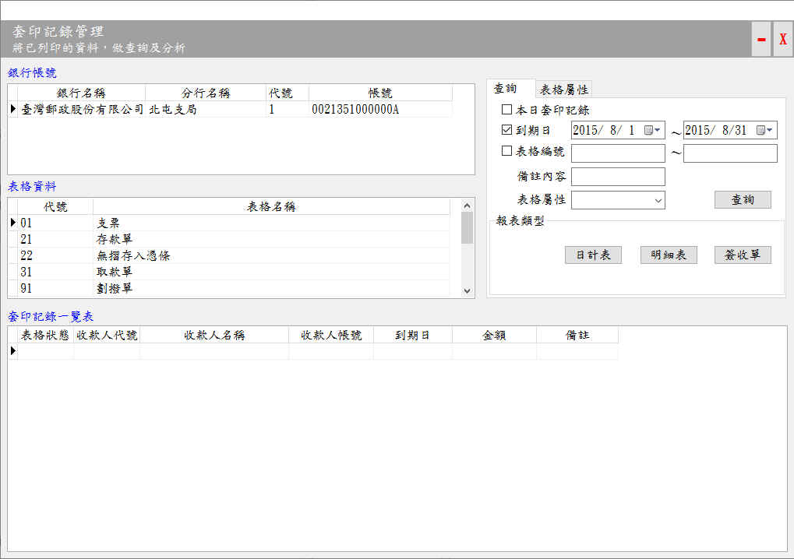
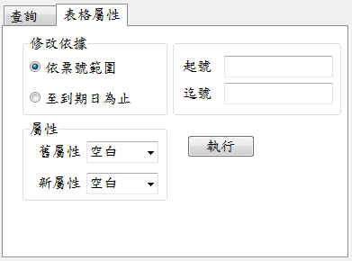
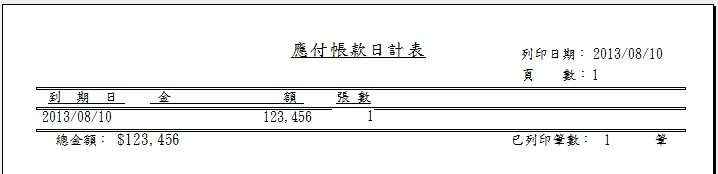
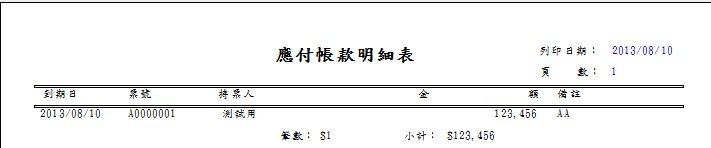
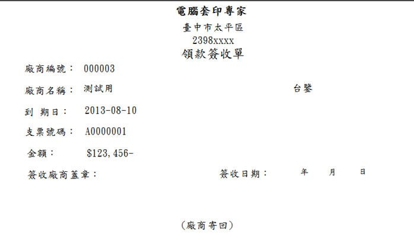

套印記錄管理
表格如有進行「存檔設定」，所有的套印紀綠都會自動存檔，這些記錄可供日後查詢，或列印成報表，以便利套印工作之管理，本視窗功能說明如下：
- 銀行帳號：以帳號為查詢依據。
- 「查詢」工作頁：可依本(查詢)日、日期期間(可選擇僅到期日)、表格編號、備註內容、表格屬性等多種參數進行查詢。查詢後可以產生3種報表：
- 日計表：以日期為統計單位，例如支票套印會算出某日應付票款及金額。
- 明細表：將某個指定範圍內的套印記錄，逐一顯示(列印)出來。
- 簽收單：可以依表格(支票)號碼列印領款簽收單，方便支票交付及管理。
- 「表格屬性」工作頁：可依屬性進行查詢(列印)。

套印記錄管理

表格屬性工作頁
列印結果預覽：

日計表

明細表

領款簽收單